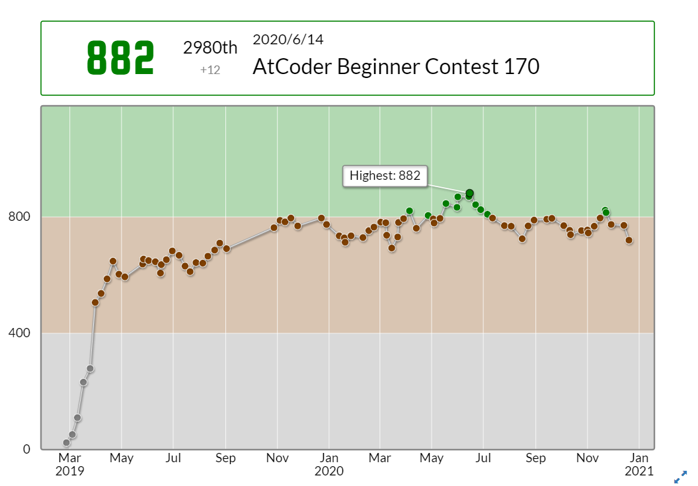
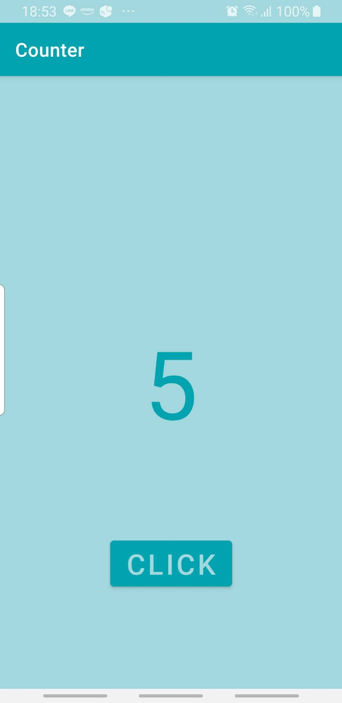

Ko Yuka's Portfolio
Natural Language Processing
Machine Translation
Speech Translation
Speech Recognition
Publish
Certification
趣味で競技プログラミングをしています．AtCoder Rated Contestに90回以上出場しています．
Highest:882/Green
Language:Python/C++

CLICKを押すと回数をカウントできます．
Test Device:Galaxy S8
Language:Kotlin

けいはんな，NAIST，十三峠，県境
Road Bike, Hill Climb